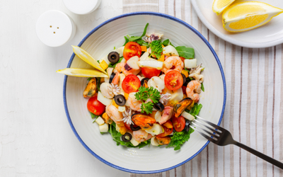
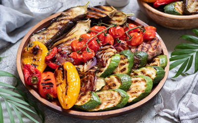

Antipasta Recipes
Bruschetta al Pomodoro
Italian bread topped with grated tomatoes, olive oil, garlic, and fresh basil.
Ingredients:
- Italian bread
- Tomatoes
- Olive oil
- Garlic
- Fresh basil
Instructions:
1. Toast the Italian bread. 2. Mix grated tomatoes, olive oil, minced garlic, and chopped fresh basil. 3. Spread the tomato mixture on the toasted bread. 4. Serve.
Carpaccio di Manzo
Thinly sliced beef served with arugula, Parmesan cheese, olive oil, and lemon juice.
Ingredients:
- Beef
- Arugula
- Parmesan cheese
- Olive oil
- Lemon juice
Instructions:
1. Slice the beef thinly. 2. Arrange sliced beef on a serving plate. 3. Sprinkle with arugula leaves and grated Parmesan cheese. 4. Drizzle with olive oil and lemon juice. 5. Serve.
Caprese Salad

Simple and delicious salad made with sliced tomatoes, mozzarella cheese, and fresh basil leaves.
Ingredients:
- Tomatoes
- Mozzarella cheese
- Fresh basil leaves
- Olive oil
- Balsamic vinegar
Instructions:
1. Slice the tomatoes and arrange them with mozzarella cheese.
2. Sprinkle with fresh basil leaves.
3. Drizzle with olive oil and balsamic vinegar.
4. Serve.
Arancini

Small balls made with risotto, filled with cheese or meat, and fried.
Ingredients:
- Risotto
- Cheese
- Meat
- Flour
- Vegetable oil
Instructions:
1. Prepare risotto rice and let it cool.
2. Form small balls from the cooled risotto.
3. Fill with cheese or meat.
4. Roll the balls in flour.
5. Fry in vegetable oil.
6. Serve.
Calamari Fritti
Squid rings lightly coated in flour and fried, served with lemon slices.
Ingredients:
- Squid
- Flour
- Salt
- Olive oil
- Lemon slices
Instructions:
1. Clean the squid and cut into rings.
2. Lightly coat with flour and fry.
3. Season with salt.
4. Serve with lemon slices.
Prosciutto e Melone
Thinly sliced prosciutto wrapped around melon slices.
Ingredients:
- Prosciutto
- Melon
Instructions:
1. Slice the prosciutto thinly.
2. Wrap slices of melon with prosciutto.
3. Serve.
Insalata di Mare
Delicious seafood salad made with shrimp, calamari, mussels, and other seafood.
Ingredients:
- Shrimp
- Calamari
- Mussels
- Seafood mix
- Lettuce
- Olive oil
- Lemon juice
- Salt
- Black pepper
Instructions:
1. Boil the seafood and let it cool.
2. Chop the lettuce and arrange it on a serving plate.
3. Add boiled seafood on top of the lettuce.
4. Drizzle with olive oil, lemon juice, salt, and black pepper.
5. Serve.
Panzerotti
Small pizzas filled with cheese, tomato sauce, and other ingredients, then fried.
Ingredients:
- Pizza dough
- Cheese
- Tomato sauce
- Olives
- Mushrooms
- Sausage
Instructions:
1. Roll out the pizza dough and cut into squares.
2. Place cheese, tomato sauce, olives, mushrooms, and sausage in the center of each square.
3. Fold the edges of the dough to form a round shape.
4. Fry in vegetable oil.
5. Serve.
Grilled Vegetable Platter
A platter of grilled vegetables marinated in olive oil and balsamic vinegar.
Ingredients:
- Eggplant
- Zucchini
- Bell peppers
- Tomatoes
- Onions
- Olive oil
- Balsamic vinegar
- Salt
- Black pepper
Instructions:
1. Slice the vegetables and grill them.
2. Arrange grilled vegetables on a serving platter.
3. Drizzle with olive oil, balsamic vinegar, salt, and black pepper.
4. Serve.
Stuffed Mushrooms
Thinly sliced beef served with arugula, Parmesan cheese, olive oil, and lemon juice.
Ingredients:
- Mushrooms
- Cheese
- Parsley
- Garlic
- Breadcrumbs
- Olive oil
- Salt
- Black pepper
Instructions:
1. Remove stems from mushrooms and hollow out the caps.
2. Mix cheese, parsley, garlic, breadcrumbs, olive oil, salt, and black pepper.
3. Stuff mushroom caps with the mixture.
4. Bake in the oven.
5. Serve.